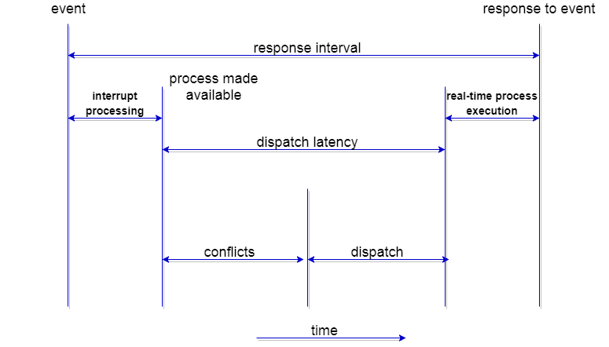

What is Scheduling?
Scheduling is the process that is used to share the computing resources such as memory, processor time, and bandwidth to the different processes, data flows, threads, and applications that need them. Scheduling is used to balance traffic on the system and for appropriate usage or distribution of resources and assign priorities according to the set of rules.
With the help of scheduling, a computer system can serve all requests and also provides some quality of services.
In a system, Scheduling is carried out with the help of an apt scheduler, which primarily deals with three things:
- Latency: - It is the turnaround time or, in other words, latency is the time to complete the job from the time of the request to the time of submission of the job, which also consists of waiting time.
- Response Time: - Response Time is the time required to serve the process or request.
- Throughput: - Throughput is the time to finish the task from starting to the end per unit of time.
What is CPU Scheduling?
CPU scheduling is defined as a method which permits the process to use the CPU conveniently and an efficient way when another process execution is on hold or in a waiting state because of a lack of resources such as I/O, etc. The purpose of CPU scheduling is used to improve the efficiency of the system and make the system fast and fair.
The operating system (OS) chooses the process for execution in the ready queue, at the time when the CPU remains ideal. The process is chosen by the use of a short-term scheduler. The task of the scheduler is to choose the processes in the memory which are to be executed and then allocates the CPU to one of the processes.
The decision of CPU scheduling is taken place under the following cases.
- When the CPU switches a process from running to waiting state.
- If a process changes from running to the ready state Example: when an interrupt occurs between processes.
- If a process changes from waiting to running state. Example: the completion of I/O.
- If a process is over.
Example: - If a process requests for a resource and the resource is held by another process, then in this situation, the process enters into the running state to the waiting state.
In 1 and 4 cases, there is no option for scheduling. A new process should be chosen for execution. But there is an option in cases 2 and 3.
If scheduling is done under 1 and 4 cases, then scheduling scheme is known as Non-Preemptive scheduling. Otherwise, scheduling is called as Preemptive Scheduling.
Types of Scheduling
There are two types of Scheduling:
- Preemptive Scheduling.
- Non-Preemptive Scheduling
- Preemptive Scheduling
- Non-Preemptive Scheduling
Preemptive Scheduling is a type of scheduling in which the process changes from running state to the ready state and waiting state to the ready state.
In Preemptive Scheduling, resources are allocated to the process for some time, and then it is taken back, and if that process still has CPU burst time remaining, then the process is again put back into the ready queue. The process present in the ready queue until the process gets the next turn of executing.
Preemptive scheduling is priority-based scheduling. The process having the highest priority is always processed and utilized the resources like CPU.
Algorithm used in preemptive scheduling are Priority scheduling, Shortest Remaining Time First (SRTF), Round Robin (RR), etc.
Non-Preemptive Scheduling is a Scheduling which is used if the process is over, or if the process changes from the running state to the waiting state. In Non-Preemptive Scheduling, if the resources are allocated to the process, then the process holds the CPU until the process is terminated or enters into a waiting state. In Non-Preemptive scheduling if the process is running, then no interrupt is allowed in between the execution of the process. Instead, it waits until its CPU burst time is complete, and it can then assign the CPU to another operation.
Non preemptive scheduling is th1e only scheduling which is used on some hardware platforms because it does not need any hardware for preemptive scheduling.
CPU Scheduling: Dispatcher
The Dispatcher is the element that contains the CPU scheduling function. Dispatcher module is used in CPU scheduling, which provides control to the CPU in the selection of processes using the short-term scheduler.
Dispatcher involves:
- Context Switching
- Switching to user mode
- Skipping to the user program’s correct location to again start the program from where it was last left
The dispatcher must be as quick as possible, as it is called at every process turn. The time utilized by the dispatcher to halt one process and resume another process is called as Dispatch Latency.
CPU Scheduling: Scheduling Criteria
There are various criteria for CPU Scheduling
- Throughput
- CPU Utilization
- Load Average
- Turnaround Time
- Waiting Time
- Response Time
Throughput: Throughput is defined as the total number of processes that complete its execution per unit time. Depending on the specific processes, this can vary from 10/second to 1/hour.
CPU Utilization: CPU utilization is an essential job in the operating system. For effective CPU utilization, the operating system must ensure that the CPU stays as active as possible most of the time. It can be between 0 to 100 percent, but in the Real-Time operating system, the range is 40 percent, for low-level, and for the high-level system, it can be 90 percent. for better CPU utilization, CPU must busy at all the time.
Load Average: load average is the average number of processes which is existing in the ready queue and waiting for a CPU.
Turnaround Time: Turnaround Time is defined as the total amount of time process consumed from its arrival to its completion. In other words, it is the total amount of time to execute a specific process.
Waiting Time: Waiting time is the cumulative amount of time for which the process has waited for the allocation of the CPU.
Response Time: Response Time is defined as the difference between the time of arrival and the time in which the process gets the CPU first.